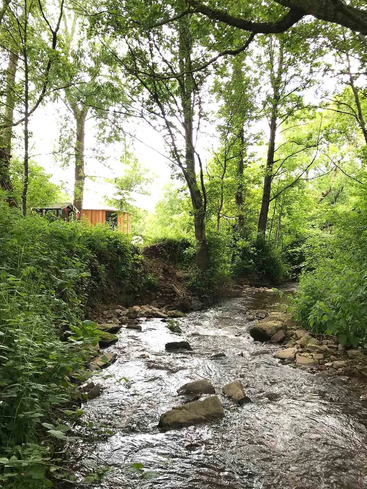
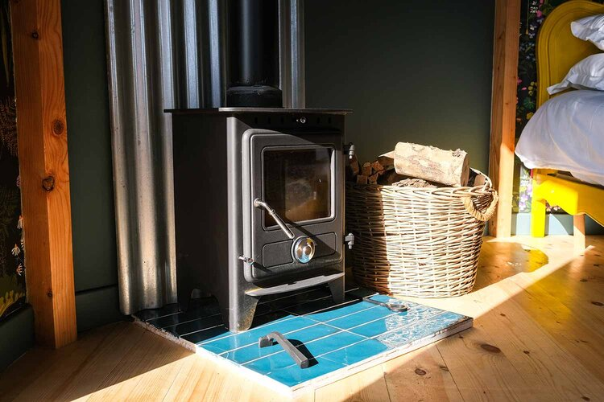

Things to do near Hay-on-Wye
From wild swimming at Glasbury's pebble beaches to climbing Hay Bluff for sweeping mountain views, there's no shortage of adventure on our doorstep.
Read More
From wild swimming at Glasbury's pebble beaches to climbing Hay Bluff for sweeping mountain views, there's no shortage of adventure on our doorstep.
Read More.jpg)
Known as the town of books, Hay-on-Wye is bursting with independent bookshops and cosy cafes. Browse quirky finds, grab local ice cream, and catch the Thursday market.
Read More
From The Griffin at Felin Fach for a special occasion to tapas at Tomatitos, discover our favourite local restaurants, pubs and cafes.
Read More